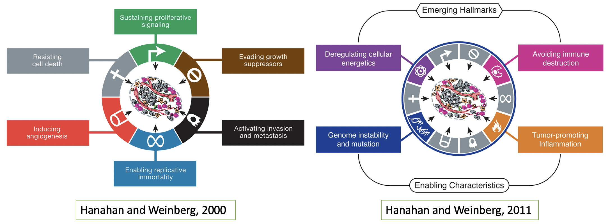

Project: Cancer Hallmark and Metabolic Pathways in Cancer
Introduction
Tumor tissues are a complex mixture of distinct cell types. Cancer cells represent the most distinctive part of tissue. These are normal cells which have undergone an oncogenic event, such as for example copy-number variations, in which portions of chromosomes are duplicated a large number of times, or chromosomal fusions, in which several portions of chromosomes are fused together and might induce the high expression of so-called oncogenes. However, in some cancer types, these tumor cells only represent a small fraction of the tumor tissue. Other non-tumor cells contribute to the tumor micro-environment, such as immune cells (e.g. tumor infiltrating lymphocytes, or TILs) or stromal cells. These different cell types form a complex system in which multiple interactions (e.g. through cytokine signalling) take place and promote the tumor development.
Despite this complexity, and the very distinct feature of different tumors (liquid, solid, sarcomas, carcinomas,..), a number of common cellular principles have been described, which can be identified in all cancer types; these are the so called cancer hallmarks. A first description of 6 hallmarks was made by Hanahan and Weinberg in 2000, and updated and extended to four further characteristics by the same authors in 2011 (see references below).

These hallmarks represent cellular mechanisms by which the tumor cells acquire a growth advantage over normal cells and evade cellular mechanisms, such as immune surveillance, meant to suppress cancer cells. On the other hand, various metabolic process are being altered in cancer cells to adapt the cell to the changed micro-environment. The best known example of such a metabolic changes is the Warburg-effect, during which the cancer cell switch their energy production from an aerobe mode to an anaerobe-like mode, i.e. purely through glycolysis, even in the presence of oxygen (‘aerobe glycolysis’). However, in recent years, additional examples of the importance of metabolic changes in cancer have been described.
The activation of the 10 hallmarks can be detected by changes in the expression levels of certain genes that can be related to one or the other of these hallmarks or metabolic pathways. For example, angiogenesis, i.e. the development of new blood vessels in the tumor to provide nutrients, is induced by a number of well described genes such as EGFR, along with a number of other genes which promote this process.
The goal of this project is to perform a pan-cancer analysis of these cancer hallmarks and metabolic pathways, using datasets of genes expression data from a large collection of tumor samples. We will use the TCGA (The Cancer Genome Atlas) collection of RNA-seq data, across a large number of tumor types and patients (hence pan-cancer) and identify the activity of these hallmarks by using a collection of gene sets which describe the activity of these pathways. Then, each group in this project will focus on a specific cancer type and compare these hallmarks between the cancer samples and matched normal control.
Hence, you will be conducting (1) a pan-cancer analysis to compare tumor types amongst themselves (similar to the other groups in the project), and (2) a cancer specific analysis to compare normal to cancer cells in this tumor type.
The 5 sub-projects correspond to a different tumor type for the cancer specific analysis
- sub-project 1: BRCA = breast cancer;
- sub-project 2: KIRC = kidney renal carcinoma;
- sub-project 3: LUAD = lung adenocarcinoma;
- sub-prohect 4: PRAD = prostate adenocarcinoma;
- sub-project 5: THCA = Thyroid carcinoma
Objectives and workplan
The objectives of your project are the following:
- Identify cancer hallmark pathways: we have provided a first list of genesets, which have been curated from the literature; check those and identify in the literature additional (for example metabolic pathways) that are relevant to cancer, and collect the corresponding gene sets. For this, you can use the following databases:
- MSigDB: this is a very large collection of gene sets organized by categories; you can browse by keyword
- Gene Ontology: GO is a controlled vocabulary which describes all biological or molecular processed; you can query bey keyword, and then extract the genes which are annotated to this term (make sure to select the right organism!)
- KEGG: Comprehensive database of biological pathways
- Pathway Commons: this is a very large database of pathways from which gene sets can be obtained
- Compare gene sets: make a comparison of the cancer hallmarks gene sets and the selected metabolic gene sets; how many shared genes are there between these gene sets?
- a compiled list of hallmark related datasets are provided (see dataset section); bring your metabolic pathways into a similar format
- find a way to compare all these datasets, in order to identify groups of datasets with shared genes (identify a suitable metric to quantify the distance or similarity between 2 sets!)
- display this comparison using a graphical representation
- Perform a pan-cancer analysis: determine the expression profiles of these gene sets across all TCGA tumor datasets, and determine patterns and clusters of tumor samples
- a data frame of expression values for many cancer samples is provided (see dataset section);
- start with one pathway, and check the expression of the genes of this pathway compared to all genes for one sample; how could you summarize this into one number? This would represent the activity of this pathway in this sample
- compute the activities of all pathways for all samples, and display this in an appropriate way
- how can you identify patterns and clusters of samples / pathways?
- compare this with the clinical informations provided in the datasets; can you find associations with specific clinical variables?
- Compare Tumor to normal tissue through a focused analysis: perform a differential analysis for the select tumor type between normal tissue and tumor tissue
- for the tumor type you selected, repeat a similar analysis as in (3) in tumor and normal samples
- test which pathways have a significant different activity between the normal and tumor samples
- Predict pathway activities using a regression model: predict the activity of a metabolic pathway using the other hallmarks/metabolic pathways as explanatory variables
- select one pathway of interest
- can you build a linear regression model to determine the activity of this pathway from the other pathways? Make sure to take into account the analysis performed in (2) !
Alternatively, you can try to perform a logistic regression model to perform a binary classification tumor vs. normal based on the activity of the pathways.
All these analysis steps should be summarized in a R markdown document, with appropriate description and graphical outputs!
Description of datasets
We have stored 4 datasets onto a public platform, figshare. These datasets represent
a data frame containing the gene expression data from RNA-seq for almost 10,000 TCGA cancer patients, representing 33 different tumor types; you can download the R-object
tcga_tumor_log2TPM.RDS(beware, almost 1 Gb!) using this link: https://figshare.com/s/3c2bf4d766181a17a2e0a data frame with 37 clinical annotations for all TCGA samples present in the full data matrix; you can download the R-object
tcga_tumor_annotation.RDSusing this link : https://figshare.com/s/eed44ff6fdcf451cebd9a R object containing, for 5 tumor types, the expression data of matched tumor and normal tissue; you can download this object
tcga_tumor_normal_datascience_proj_2024.RDSusing this link https://figshare.com/s/3b9aa021a5cebc249ffaa R object, containing a list of gene sets for the cancer hallmarks and additional pathways; you can download the object
hallmarks_genesets.rdsusing this link https://figshare.com/s/4f917a4f41e90027dd6f
Once you have downloaded these 4 files, load them as below (make sure to replace the path/to/your/directory/ part with the path to the location on your computer where you have stored the files!):
tcga_exp = readRDS("path/to/your/directory/tcga_tumor_log2TPM.RDS")
tcga_annot = readRDS("path/to/your/directory/tcga_tumor_annotation.RDS")
tcga_tumor_norm = readRDS("path/to/your/directory/tcga_tumor_normal_datascience_proj_2020.RDS")
genesets = readRDS("path/to/your/directory/hallmarks_genesets.rds")The first 2 objects are data frames
The third object is a list with 5 entries corresponding to 5 tumor types (BRCA = breast cancer; KIRC = kidney renal carcinoma; LUAD = lung adenocarcinoma; PRAD = prostate adenocarcinoma; THCA = Thyroid carcinoma); each entry of the list is itself a list with 3 entries, corresponding to (1) a data frame with expression values for tumor samples, (2) a data frame with expression values for normal samples from the same patients, (3) a data frame with clinical annotations for these patients.
Hence, if you want to access the expression matrix for tumor samples and normal sample for LUAD for example, you can do it through:
luad = tcga_tumor_norm[["LUAD"]]
luad.tumor = luad[["tumor"]]
luad.norm = luad[["normal"]]
luad.annot = luad[["clinical"]]
dim(luad.tumor)
[1] 19624 58
dim(luad.norm)
[1] 19624 58
dim(luad.annot)
[1] 58 37The last object is again a list
class(genesets)
[1] "list"
names(genesets)
[1] "genesets" "description"
names(genesets$genesets)
[1] "Angio_AACR" "Angio_ALL" "Angio_VEGF"
[4] "Angio_N_Reg" "Angio_P_Reg" "Apop_AACR"
[7] "Apop_ALL" "Apop_SURVIVAL" "Genome_AACR"
[10] "Genome_DN_Reg" "Genome_REPAIR" "Growth_AACR"
[13] "Growth_ALL" "Growth_CONTACT_Inh" "Growth_Tumor_Supp"
[16] "Immune_AACR" "Immune_ALL" "Immune_UP"
[19] "Immune_DN" "Immune_Ils" "Inflam_AACR"
[22] "Inflam_PRO" "Inflam_NEG" "Meta_AACR"
[25] "Meta_Glc" "Meta_Gln" "Meta_Chol"
[28] "Meta_FA" "Meta_HIF1" "Metas_AACR"
[31] "Metas_ALL" "Metas_EMT_MMP" "Metas_NEG"
[34] "Metas_EMT" "Prol_AACR" "Prol_EGFR"
[37] "Prol_MAPK" "Prol_PI3CK" "Prol_NOTCH"
[40] "Prol_ERK" "Prol_RAS" "Prol_JAK_STAT"
[43] "Prol_MTOR" "Prol_WNT" "Replication_AACR"
[46] "Replication_Telomerase"
## these are the first genes of the first geneset
head(genesets$genesets[[1]])
[1] "AAMP" "ACTA2" "ACVR1" "ACVRL1" "ADGRG1" "ADM"
## the element description contains a description of the genesets
head(genesets$description)
[1] "na" "all angiogenesis inducing genes"
[3] "VEGF pathway" "negative regulators of angiogenesis"
[5] "positive regulators of angiogenesis" "na" Literature review
This list is meant as a starting point for your literature research; you should not restrict yourself to this list only!
Reviews on general cancer biology and cancer metabolism
- Cancer biology - Hanahan, Douglas, and Robert A. Weinberg. “Hallmarks of cancer: the next generation.” cell 144, no. 5 (2011): 646-674. https://doi.org/10.1016/j.cell.2011.02.013
- Cancer metabolism - De Berardinis, R. J., & Chandel, N. S. (2016). Fundamentals of cancer metabolism. Science Advances, 2(5). https://doi.org/10.1126/sciadv.1600200
- Cancer metabolism - Pavlova, Natalya N., and Craig B. Thompson. “The emerging hallmarks of cancer metabolism.” Cell metabolism 23, no. 1 (2016): 27-47.https://doi.org/10.1016/j.cmet.2015.12.006
Analysis of cancer hallmarks across multiple cancer types using integrative approches
- Cancer immunology - Thorsson, Vésteinn, David L. Gibbs, Scott D. Brown, Denise Wolf, Dante S. Bortone, Tai-Hsien Ou Yang, Eduard Porta-Pardo et al. “The immune landscape of cancer.” Immunity 48, no. 4 (2018): 812-830. https://doi.org/10.1016/j.immuni.2018.03.023
- Cancer metabolism - Peng, Xinxin, Zhongyuan Chen, Farshad Farshidfar, Xiaoyan Xu, Philip L. Lorenzi, Yumeng Wang, Feixiong Cheng et al. “Molecular characterization and clinical relevance of metabolic expression subtypes in human cancers.” Cell reports 23, no. 1 (2018): 255-269. https://doi.org/10.1016/j.celrep.2018.03.077
- Cancer stemness/de-differenciation Malta, Tathiane M., Artem Sokolov, Andrew J. Gentles, Tomasz Burzykowski, Laila Poisson, John N. Weinstein, Bożena Kamińska et al. “Machine learning identifies stemness features associated with oncogenic dedifferentiation.” Cell 173, no. 2 (2018): 338-354. https://doi.org/10.1016/j.cell.2018.03.034
- DNA damage in cancer - Knijnenburg, Theo A., Linghua Wang, Michael T. Zimmermann, Nyasha Chambwe, Galen F. Gao, Andrew D. Cherniack, Huihui Fan et al. “Genomic and molecular landscape of DNA damage repair deficiency across The Cancer Genome Atlas.” Cell reports 23, no. 1 (2018): 239-254. https://doi.org/10.1016/j.celrep.2018.03.076
- RAS signalling Cancer - Way, Gregory P., Francisco Sanchez-Vega, Konnor La, Joshua Armenia, Walid K. Chatila, Augustin Luna, Chris Sander et al. “Machine learning detects pan-cancer ras pathway activation in the cancer genome atlas.” Cell reports 23, no. 1 (2018): 172-180. https://doi.org/10.1016/j.celrep.2018.03.046
How to score pathways ?
Reimand, Jüri, Ruth Isserlin, Veronique Voisin, Mike Kucera, Christian Tannus-Lopes, Asha Rostamianfar, Lina Wadi et al. “Pathway enrichment analysis and visualization of omics data using g: Profiler, GSEA, Cytoscape and EnrichmentMap.” Nature protocols 14, no. 2 (2019): 482-517. https://doi.org/10.1038/s41596-018-0103-9
Paczkowska, Marta, Jonathan Barenboim, Nardnisa Sintupisut, Natalie S. Fox, Helen Zhu, Diala Abd-Rabbo, Miles W. Mee, Paul C. Boutros, and Jüri Reimand. “Integrative pathway enrichment analysis of multivariate omics data.” Nature communications 11, no. 1 (2020): 1-16. https://doi.org/10.1038/s41467-019-13983-9
Jia, Dongya, Mingyang Lu, Kwang Hwa Jung, Jun Hyoung Park, Linglin Yu, José N. Onuchic, Benny Abraham Kaipparettu, and Herbert Levine. “Elucidating cancer metabolic plasticity by coupling gene regulation with metabolic pathways.” Proceedings of the National Academy of Sciences 116, no. 9 (2019): 3909-3918. https://doi.org/10.1073/pnas.1816391116
How to structure your project
Project
You project MUST contain the following elements: - descriptive statistics about the datasets - graphical representations - dimension reduction analysis (PCA, clustering or k-means) - statistical tests (t-test, proportion tests etc) - linear/logistic regression analysis, either uni- or multivariate
Data cleanup
You will be analyzing multiple genomic data sets together. It is essential that you explore each dataset and clean it. Cleaning can refer to many things:
- Removing missing values
- Imputing missing values
- Removing low variance columns/rows
- Removing batch effects
- Removing outlier samples (only if it is due to technical issues !!)
- Making sure that data is in the correct format, for example, numbers should be encoded as numeric and not as characters. Categorical variables should be factors etc.
- Re-ordering rows/columns in meaningful and useful ways
Data exploration
Now that you have cleaned data, explore your data to understand its structure. Perform basic exploratory data analysis.
- Look at the distribution of the overall data, specific samples or features.
- Visualize the data distribution
- Visualize the inter-dependencies among specific samples/features of interest
- Check some of your hypothesis like - is something high/low between two conditions etc
Data reduction
You have a high dimension matrix, that is, you have way more features (~25000 genes) than observations.
- Try out methods to reduce the dimensionality of this data.
- Cluster your samples to identify similar and dis-similar groups
- Check how well the groups separate based on the features of your interest